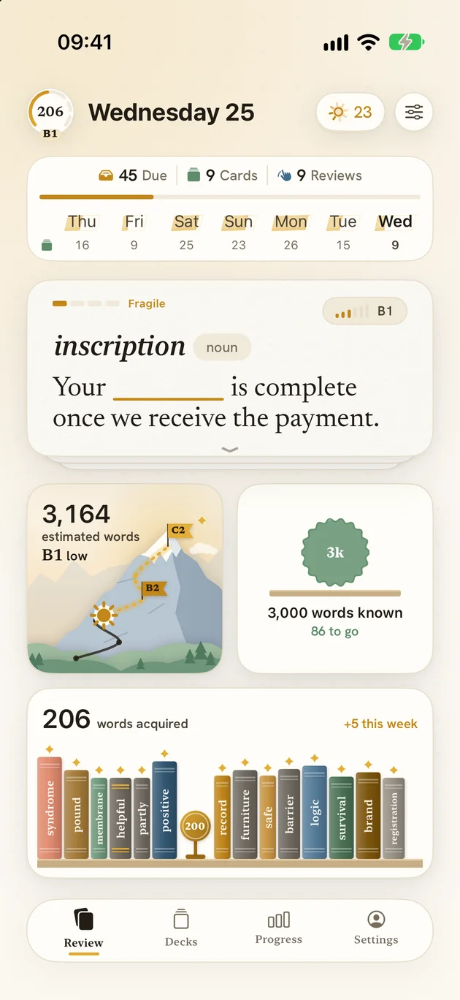
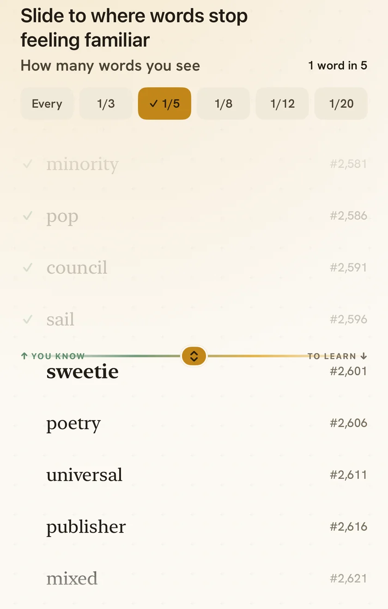
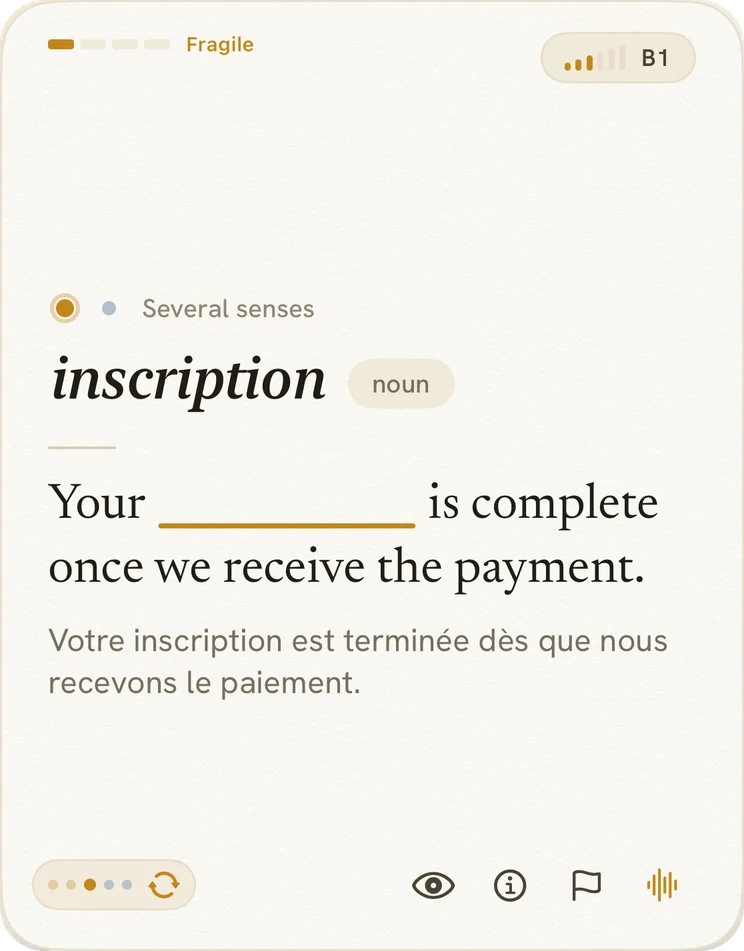
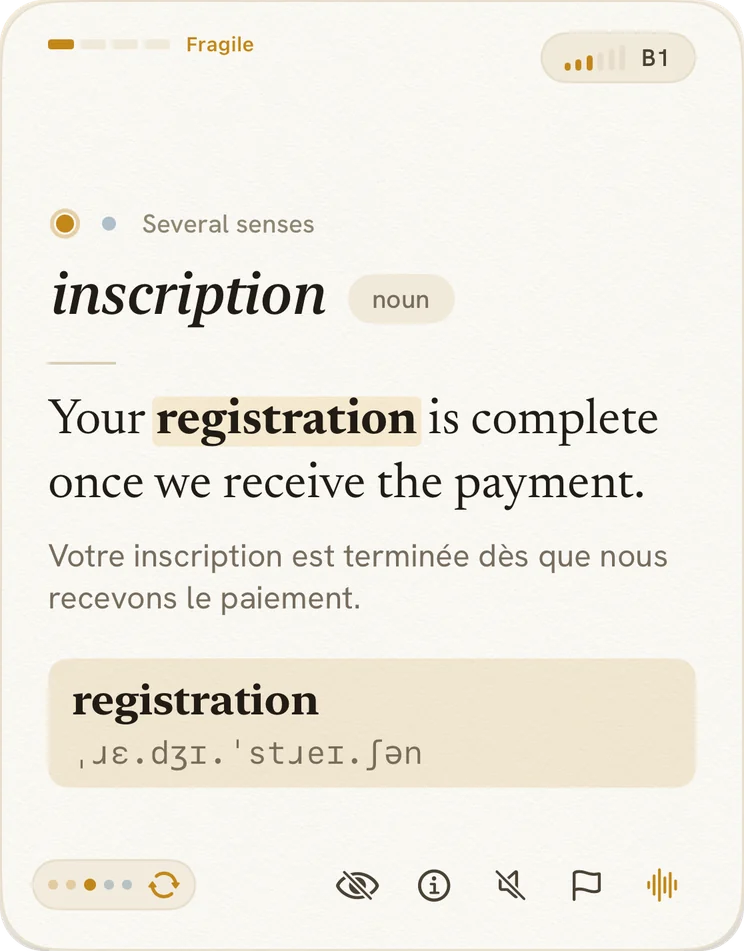
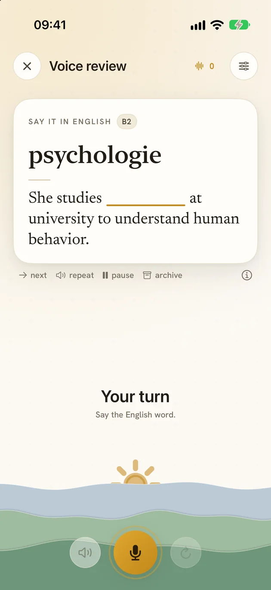
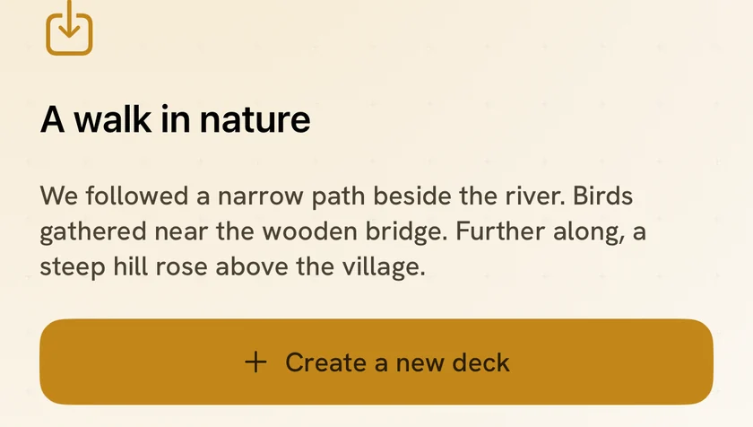
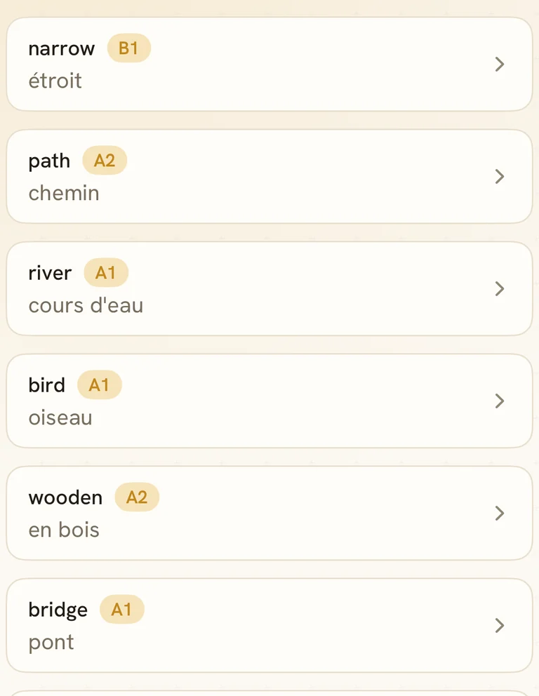
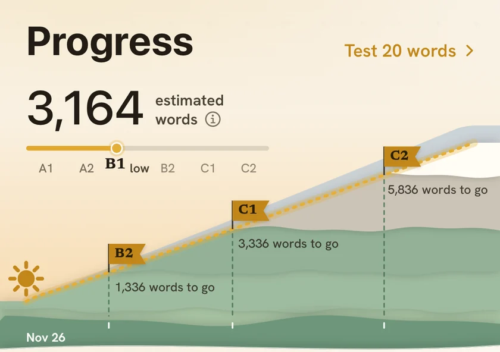
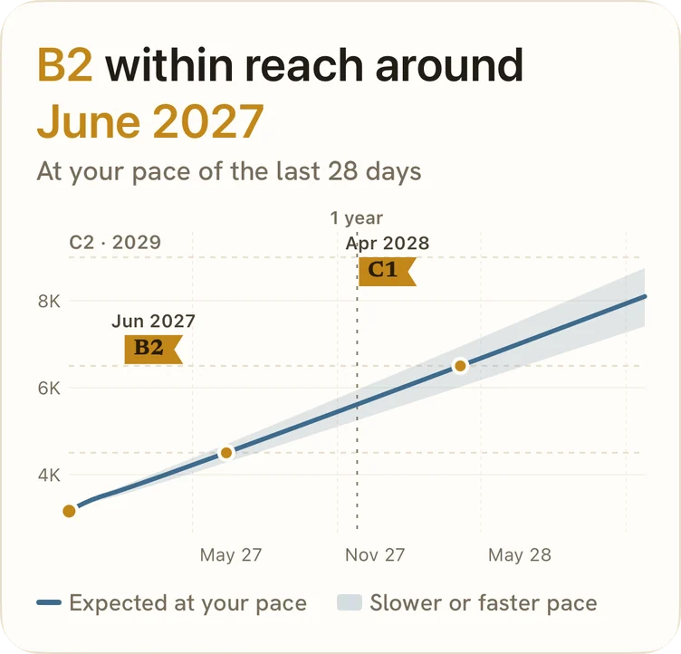
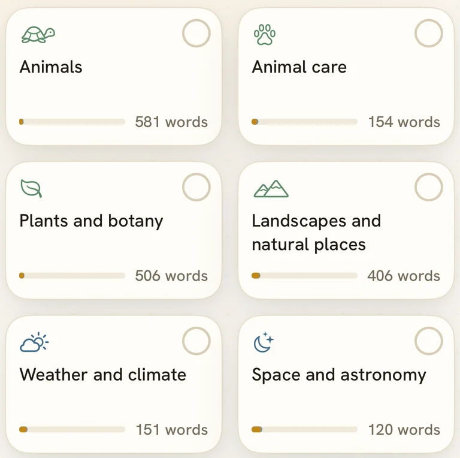

FragileA2
voyagenoun
Our train took us through snowy mountains.
Notre voyage en train nous a fait traverser des montagnes enneigées.
journeyˈdʒɝ.ni
English vocabulary · For iPhone
Try to answer, then reveal the word and see it used in a sentence. Vocalibur uses your answers to plan spaced reviews and help you remember it.
Free plan with no time limit. No ads. No account.

Which words to learn, and when to review them: Vocalibur takes care of both. All you do is recall the word.
Which words should you learn?
Scroll through the words, from the most common to the rarest, and set your starting point. Vocalibur then introduces new words by frequency: 30,000 cards, level guides and 55 themes.

How do you review?
Each card gives you a clue and a sentence to complete. Reveal the answer if you need to, then swipe the card based on what you knew.
Revealing the answer doesn’t count: only what you knew does.
MasteredLeaves your reviews.
I know itComes back later.
ArchiveLeaves your path.
To reviewComes back soon.
FragileA2
voyagenoun
Our train took us through snowy mountains.
Notre voyage en train nous a fait traverser des montagnes enneigées.
journeyˈdʒɝ.ni
FragileB1
fiableadjective
We need a car for our daily commute.
Nous avons besoin d’une voiture fiable pour notre trajet quotidien.
reliableɹɪ.ˈlaɪ.ə.bəl
FragileA1
emprunterverb
Could I your umbrella until tomorrow?
Pourrais-je emprunter ton parapluie jusqu’à demain ?
borrowˈbɑ.ˌɹoʊ
Tap the card to reveal the word, then swipe it. With a keyboard: Enter, then the arrow keys.
When should you review?
With FSRS-6, Vocalibur estimates how likely you are to forget each card: a word you struggle with comes back sooner, and successful recall spaces out its reviews. FSRS aims for 20 to 30% fewer reviews than the traditional SM-2 algorithm, at comparable retention.
An example computed with FSRS-6 and its default settings, for a word recalled at every review. Each flag is a review: it comes when the chance of recalling the word falls to about 90%. Run your finger along the curve.
In context
Each card brings together an example sentence, its translation and a definition. Once revealed, it shows more examples and the word’s other meanings; in typing mode, you type the answer and practice spelling.
“Bank” the financial institution and “bank” the side of a river each have their own card: you learn how a word is used, not just its form.


Voice review
Hear the clue, answer in English: Vocalibur checks your answer and moves on to the next card. Put on your headphones and lock your iPhone: your review continues.
Recognition runs on your iPhone, with Apple’s voices. Included in the free plan.

Your reading
Paste English text, photograph a page or share a passage from Safari. Vocalibur picks out the words that are in its catalog; you choose which ones to learn.
The text is analyzed on your iPhone and not kept: only the words you choose join your deck.


Your progress
See the practice you’ve completed, the words you’re learning and upcoming reviews. Your estimated vocabulary starts from the words you say you know, then gets sharper with your answers and a few rarer test words.
With Premium, your trajectory estimates when you’ll reach each level up to C2 at your actual pace, and a slider simulates a different pace.


Themes Premium
With Premium, choose from 55 themes to shape your vocabulary: animals, health, travel or sports. Without Premium, every theme stays mixed into your path.

Retrieval practice and spaced review have been studied in real learning settings. That is not the same as an independent evaluation of Vocalibur’s effectiveness.
Read the studies and their limits (in French)A recognition quiz with no sign-up. See your answers and their meanings, without turning a short quiz into an English level.
About 3 minutes · Nothing is sent
The quiz needs JavaScript. The rest of the site works without it.
Vocalibur is available on the App Store, for iPhone. No account, no ads, no time limit.